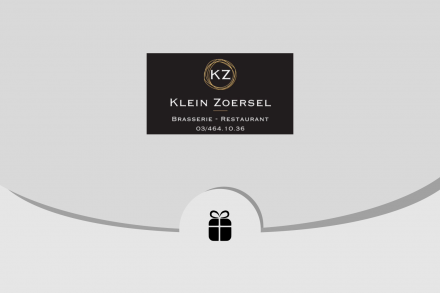

Woensdag 17/01
Vandaag had ik maar een halve observatie dag , ik begon om 8:20 en eindigde om 12:00. Bij aankomst mocht ik verder aan mijn economie vragen werken i.v.m. de observatieweek. Nadien vroeg mijn mentor of ik hem wou helpen met administratie. Ik kreeg een lijst van alle cadeaubonnen van het hele jaar. Daaruit moet ik de gebruikte cadeaubonnen fluoresceren die te herkennen waren door hun nummer. Ik ben er nog niet helemaal klaar mee maar ik ga er morgen verder aan doen. Op vraag van de boekhouder hadden ze deze gegevens nodig, om te weten welke cadeaubonnen verzilverd waren. Je merkt dat de werknemers voortdurend bezig zijn ook al is de zaak op woensdag gesloten. Door dat ik druk bezig was ging de tijd snel en was het plots 12:00 en mocht ik naar huis.Vandaag had ik maar een halve observatie dag , ik begon om 8:20 en eindigde om 12:00. Bij aankomst mocht ik verder aan mijn economie vragen werken i.v.m. de observatieweek. Nadien vroeg mijn mentor of ik hem wou helpen met administratie. Ik kreeg een lijst van alle cadeaubonnen van het hele jaar. Daaruit moet ik de gebruikte cadeaubonnen fluoresceren die te herkennen waren door hun nummer. Ik ben er nog niet helemaal klaar mee maar ik ga er morgen verder aan doen. Op vraag van de boekhouder hadden ze deze gegevens nodig, om te weten welke cadeaubonnen verzilverd waren. Je merkt dat de werknemers voortdurend bezig zijn ook al is de zaak op woensdag gesloten. Door dat ik druk bezig was ging de tijd snel en was het plots 12:00 en mocht ik naar huis.
Mijn dag in één woord is:
Rustig
Het restaurant was rustig omdat het gesloten was, enkel de werknemers waren aanwezig.
